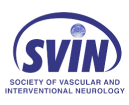
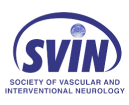

Preserving Vision, Easing Headaches: Timely Neurological Care for Idiopathic Intracranial Hypertension
The Right Care - Right Away - Can Make all the Difference

Rapid
Access
We provide convenient and early access to specialised neurology care when you need it.
Interventional Neurology
As interventional neurologists at a large tertiary institution, we have the ability to perform cerebral venography and venous sinus stenting where necessary at no delay.
Dedicated Specialty Training
We have excellent relationships with our colleagues in neurosurgery and ophthalmology. We’ll ensure you get to see the best person to provide you with specialised care to complement the care we provide.
What is Idiopathic Intracranial Hypertension

Idiopathic intracranial hypertension (IIH) is a disorder related to high pressure in the head which causes many of the symptoms . It is also sometimes called pseudotumor cerebri or benign intracranial hypertension. The fluid that surrounds the spinal cord and brain is called cerebrospinal fluid or CSF. If too much fluid is made or not enough is re-absorbed, CSF can build up.
Helping Relieve Symptoms From The Root Cause
We identify the underlying cause of your headaches or migraines. Our specialists provide a precise examination to find, and treat, the cause of your symptoms.
Whether you experience acute or chronic headaches, our clinicians will provide a precise examination to find the cause of your symptoms and find a suitable treatment.
How We Can Help
Accurate
Diagnosis
Our mission at CURA Specialists is to provide accurate diagnosis and stepwise treatment. Our specialists will work together to confirm the diagnosis of IIH. The results of a MRI scan, magnetic resonance venography (MRV) and lumbar puncture are carefully evaluated to exclude other potential causes of your symptoms.
Non-Surgical Treatment
Once the diagnosis of IIH is confirmed, initial treatment focuses on lowering intracranial pressure. This is mainly achieved with medication and weight loss if the patient is overweight. If the IIH is fulminant or medication fails to adequately reduce pressure, surgery is recommended.
Surgical Treatment
The classic surgical treatment involves the implantation of a shunt. Although shunts can relieve pressure, and sometimes headaches, they often clog or malfunction. At our institution we prefer stenting and have had excellent results with venous sinus stenting. In general we will only consider these surgical treatments once medication and lifestyle measures are either not tolerated or have failed.
Managing Headaches and Migraines
Headache is often the major complaint of patients with IIH. Once we've addressed the risk of vision loss, we want to help patients with their headaches. About two-thirds of these headaches are migraines. We use the standard approaches for migraine treatment. Ultimately, most of our patients have fewer headaches and improved quality of life.
Why Choose CURA Medical Specialists
We are confident that we provide the best IIH care in Australia.
IIH can be a difficult condition to manage. It requires compassionate and considerate physicians to work with patients to ensure that raised pressure remains under control.
We work closely with patients, optometrists and ophthalmologists and neurosurgeons to ensure that the best care is offered.
For most patients we advocate for a medication-first coupled with lifestyle changes to maximise weight loss. In many instances, this can be insufficient and a minimally invasive procedure, such transverse sinus stenting can be performed. Our procedural team at Royal Prince Alfred Hospital, is one of the most experienced centres in the world.

Meet Our Specialists
Dr Hugh Stephen Winters
MBChB (Auckland) FRACP (Neurology) CCINR (Neurology)
Dr. Winters is a fellow of the Royal Australasian college of physicians with specialist training in neurology with four additional years of training in interventional neurology which included a year of fellowship in Interventional Neuroradiology at the Erlanger Medical Center in Tennessee.
As a specialist in interventional neurology, Dr. Winters is highly trained in the use of minimally invasive, image-guided techniques to diagnose and treat diseases such as stroke, idiopathic intracranial hypertension, and aneurysms.
He is able to perform minimally invasive corticosteroids spinal injections for neck and lower back pain as well.
Dr. Winters is also specialist in general neurology.

 

Dr Timothy Ang
MBBS, FRACP (Neurology), Head of Committee for CCINR
Dr. Timothy Ang is a neurologist and interventionist at Royal Prince Alfred Hospital, Sydney. Dr. Ang uses cutting-edge medical imaging tests to diagnose and treat neurovascular and neurological diseases.
When it comes to strokes, every second counts. That’s why for Dr Ang, his research interests revolve around streamlining and improving access to hyperacute stroke therapies using Telestroke tech and retrieval networking, where doctors can perform real-time and remote diagnosis and treatment to a stroke patient, which dramatically speeds up the delivery of care.
Dr Ang's interests include idiopathic intracranial hypertension, headache, migraine, aneurysms and he is also a specialist in general neurology.
Consultation
Get a Referral from Your GP
To arrange a consultation with our neurologists you will need a valid referral from a general practitioner or another specialist.

Contact Us
Complete the form below to request a consultation. You can also email us, call or live chat.

Consultation
The specialist will take a detailed and thorough history about your neurological problem/s, perform a comprehensive physical examination and examine test results that are already available.

Care Co-ordination
Our secretaries will arrange the tests for you in advance before you leave. This is so that we can arrange for a timely follow-up after the tests and the results are available for review.

Consultation Cost
| Initial consultation (45-60 min) |
260$ |
| Follow-up (30 min) |
160$ |
* We process your Medicare claims independent of your payment on your behalf to help reduce the immediate out of pocket costs of your consultation. A valid referral has to be current and come from a general practitioner or another specialist.
Clinical Services Affiliation


Intracranial Hypertension (IIH) FAQs
What is Idiopathic Intracranial Hypertension (IIH)?
If you or someone near you is experiencing symptoms of stroke, don’t drive yourself to the hospital or ask someone to take you there. Call 112 immediately. Alert them of a possible stroke, and tell them the time the symptoms started. Emergency treatment starts on the way to the hospital.
What are the symptoms of Idiopathic Intracranial Hypertension (IIH)?
How long it takes for someone to recover from a stroke depends on several factors. As we mentioned earlier, the type and severity of the stroke, how quickly treatment began, preexisting conditions and overall health can all have a big impact.
What are the risk factors for IIH?
Almost 60% of all strokes each year are in people under 70 years, while only 8% of all strokes are in people younger than 44 years.
How is IIH diagnosed?
How long it takes for someone to recover from a stroke depends on several factors. As we mentioned earlier, the type and severity of the stroke, how quickly treatment began, preexisting conditions and overall health can all have a big impact.
How can IIH be treated?
How long it takes for someone to recover from a stroke depends on several factors. As we mentioned earlier, the type and severity of the stroke, how quickly treatment began, preexisting conditions and overall health can all have a big impact.
Should I get a Venous Sinus Stent?
How long it takes for someone to recover from a stroke depends on several factors. As we mentioned earlier, the type and severity of the stroke, how quickly treatment began, preexisting conditions and overall health can all have a big impact.
How to prevent IIH?
How long it takes for someone to recover from a stroke depends on several factors. As we mentioned earlier, the type and severity of the stroke, how quickly treatment began, preexisting conditions and overall health can all have a big impact.
Make an Appointment
A valid referral has to be current and come from a general practitioner or another specialist.